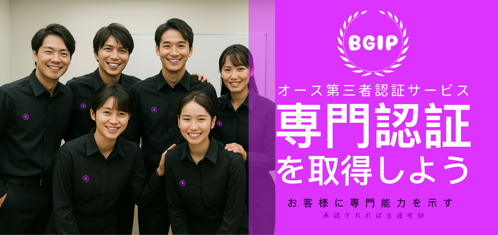
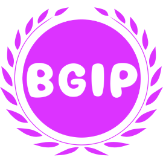
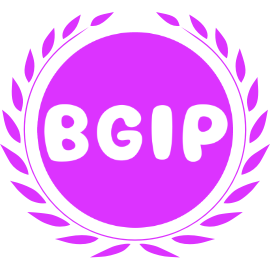

Sodanセンター™ HAYAI™ Business Growth Investment Program (BGIP)
プロモーションリスクはBGIPが負担、サービスに専念してください！
ベンチャーキャピタル ＋ マーケティングチーム ＋ AIツール開発者 = BGIP
HAYAI™ビジネス成長投資プログラム（BGIP）は、実績に基づく成果分配型の支援制度で、成長ポテンシャルと経験のあるサービス提供者が安定したクライアント基盤を早期に構築できるよう設計されています。プラットフォームはマーケティング支援や案件紹介だけでなく、受注テンプレート、契約ツール、信頼評価システムも提供し、長期的な競争力強化をサポートします。
- 本格的な投資支援
単なる案件紹介にとどまらず、マーケティング、受注管理、契約支援、信頼構築を総合的にサポートします。
- 厳格な認定基準
一定の条件を満たす経験豊富なサービス提供者のみが参加でき、高品質のプラットフォーム環境を維持します。
- 自主性を尊重した契約対応
サービス提供者はクライアントと直接契約・支払いを行え、テンプレートやツールは無償で利用できます。
- 成果に基づくリスクゼロ
プラットフォームは先行投資いたしますが、成果発生後に分配を行うため、実質的なリスクはありません。
- 多様な集客チャネル
市場リソースを活用し、高品質な見込み客を迅速に獲得できます。

従来のオープン型受注プラットフォームでは、プロモーション支援が一切提供されず、ほぼ誰でも自由に登録できるため、サービスの品質管理が不十分であるケースが少なくありません。これに対し、HAYAI™ BGIPは完全招待制を採用しており、当プラットフォームの専門チームによる厳格な審査と面談を通過した、プロフェッショナルなサービス提供者のみが参加できます。専門的なスキルがない方、実務経験が不足している方、経歴が不明確な方は参加できません。
BGIPでは、優れたサービス提供者に対して、一対一の営業支援とリソースサポートを提供しています。マーケティングチームが、提供者の業務レベルや市場でのポジショニングに応じて、カスタマイズされたプロモーション戦略を策定し、実際に人材と資金を投入して、個人ブランドの構築、市場での認知度向上、そして高品質なクライアント層の安定的な拡大をサポートします。
当プラットフォームは、成功するために必要な広告とマーケティング支援を提供する際、実際にはその運営コストが取引額の38〜46％に達することが多いです。短期的に見れば、当プラットフォームにはほとんど利益がありません。それでも私たちがサービス提供者の成功を支援し続ける理由は、単に短期的な利益を求めているわけではありません。私たちの使命は、優れた才能を持つが市場開発が苦手なサービス提供者を支え、その才能が埋もれてしまうのを防ぐことです。多くの素晴らしいサービス提供者が、自分の専門性やスキルを市場で発揮する機会を持たないまま、他の理由で埋もれてしまっています。私たちは、これらのサービス提供者にビジネスを自動的に広げる機会を提供することで、彼らが更に成長できる環境を作りたいと考えています。
最も重要なのは、優れたサービス提供者が正当な報酬と商業的な機会を得ることです。私たちは、プラットフォームの運営コストをカバーしつつ、サービス提供者が最大限の利益を得られるよう支援しています。また、多くの中小企業やサービスチームは、安定した集客や効果的なマーケティングの手段を持たずに苦しんでいます。私たちは、これまでに培ってきた市場運営のノウハウと技術的な統合リソースを活用することで、彼らのマーケティングにおけるリスクや時間的コストを大幅に削減し、より効率的なビジネス展開を支援しています。サービス提供者が受注を得るたびに心から喜び、その支援が役立っていることを嬉しく思います。最終的には、サービス提供者の成長に伴い、私たちも少しずつ利益を得ることができます――これが当プラットフォームの目指す価値と未来です。
はい。BGIPでは、すべての専門サービス提供者の業務の自由を尊重しており、他のルートやプラットフォームからの案件を同時に受けることも可能です。当プラットフォームが提供する営業支援やプロモーションは、他のクライアントやパートナーとの契約・受注に影響を及ぼすものではありません。
ただし、BGIPを通じて獲得したすべての案件およびクライアント（再受注を含む）に関しては、成約ごとに当プラットフォームに対して定められた成果分配金を期日通りにお支払いいただく必要があります。
はい。決済手数料を削減するため、クライアントからの代金を直接受け取ることが可能です。
ご自身の銀行口座情報をクライアントに共有しての振込、現金での受け取り、PayPay、LINE Pay、PayPal、Payoneer を通じた決済が可能です。
請求書やインボイスをクライアントに直接発行することもでき、BGIPを経由しての支払い処理は不要です。
HAYAI™BGIPは支払い代行や契約履行に介入せず、トラブル対応は当事者間で行われます。ただし、記録に基づいた簡易な仲裁対応や中立的なアドバイスは提供する場合があります。
Sodanセンター™は受注テンプレートや契約支援ツールを無償提供しますが、契約書の作成や署名、履行には関与しません。全てサービス提供者自身が対応します。
できません。サービス提供者はクライアントと直接契約を結び、契約文書に「Sodanセンター™」「ソダンセンター」「SodanCenter」「sodancenter.com」「HAYAI™」「BGIP」「ハヤク」「hayai.jp」などを記載したり、プラットフォーム名義で署名することは禁止されています。
はい。信頼構築の一環として、約2回に1回の割合でクライアントにフォローアップを行います。違反が認められた場合は即時アカウント停止および契約追及の対象となります。
返金可否はキャンセル時点と進捗状況によります：
- サービス未着手（連絡・スケジュール・企画なし）：手数料を差し引いて全額返金。
- 初期作業済（連絡や企画段階）：進捗に応じて一部返金。
- 主要作業開始または成果物制作段階：基本的に返金不可。
返金が承認された場合、振込手数料はサービス提供者様負担です。ご不明な点があればサポートへご相談ください。
© 2025 HAYAI™ BGIP Program. All rights reserved.
 
